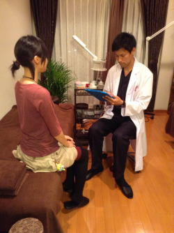
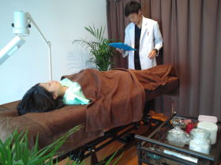
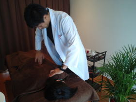
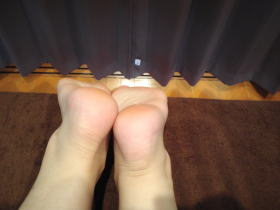
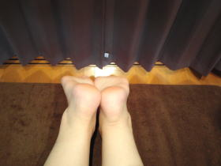
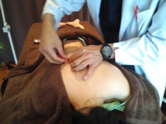
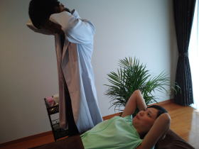
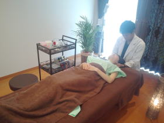
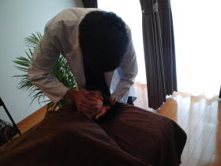

鍼灸、整骨、接骨、美容鍼灸、マッサージ、整体、カイロプラクティック、O脚矯正、不妊、エステでお困りの方はTeaching Beauty鍼灸マッサージ整骨院へ。
電話でのご予約・お問い合わせはTEL.03-6413-7803
〒154-0014 東京都世田谷区新町3-21-1さくらウェルガーデン301号室
治療の流れ treatment
治療の流れ
1. 問診表記入
来院された際に現在の症状等を問診表に記入して頂きます。
2. カウンセリング（医療面接）
問診表を中心に体の状態を聞かせて頂きます。 
3. 検査
脈診（脈を触れて体の状態を把握）、腹診（お腹を触り体の状態を把握）、舌診（舌の状態を見て体の状態を把握）を行います。 また、理学検査法、テスト法、末梢神経テスト、中枢神経テストなどを用いてどのような症状なのかを特定していきます。


4.姿勢検査
骨盤の歪み、足の長さチェック、頸部の傾き、肩の開き、腕の動き、足関節の動きや傾き、手術の跡、傷やアザ、斑点や発疹、足のタコなど全体の姿勢を見ます。
姿勢による内臓の変化など姿勢異常だと色々な症状が出てきます。
【治療前】 【治療後】


5. 施術
患者様のご希望に応じたメニューをご用意しております。
施術が必要な方、美しくなりたい方、骨盤が歪んでいる方、痩せたい方など患者様の
合要望にお答えします。
また、当サロンの特徴である一人一人の患者様に合わせた、オーダーメイド治療を行っております。
【鍼施術・灸施術】 【運動法】


【整体・ｶｲﾛﾌﾟﾗｸﾃｨｯｸ】 【小顔矯正】


当サロンの適応疾患
| 運動器系疾患 | 骨折、脱臼、捻挫、打撲、肉ばなれ 、腰痛、坐骨神経痛、スポーツ障害、ぎっくり腰、脊柱管狭窄症、分離・すべり症、むちうち（交通事故）、変形性膝関節症、リウマチ、肩こり、五十肩、背部痛、 頚肩腕症候群（首・肩・腕の痛み、しびれ）、腱鞘炎、 ばね指 、関節炎、顎関節症、肩関節周囲炎、神経根症状、 筋緊張性頭痛（首肩こりからくる頭痛）、片頭痛、股関節痛、 大腿骨頭壊死症、膝痛、肘痛（野球肘、テニス肘など）、 寝違え、ヘルニア（頸椎、腰椎）、O脚、骨盤矯正、線維筋痛症 その他整形外科疾患 |
| 耳鼻科疾患 咽喉科疾患 |
耳鳴り、突発性難聴、めまい、メニエール病、鼻炎、蓄膿症、花粉症 扁桃腺炎、慢性上咽頭炎、騒音性難聴、音響外傷性難聴、耳管開放症、耳管狭窄症、急性中耳炎、滲出性中耳炎、慢性化膿性中耳炎、癒着性中耳炎、真珠腫性中耳炎、耳硬化症、ムンプス難聴、顔面痙攣、外リンパ瘻、聴神経腫瘍、急性低音障害型感音難聴 |
| 眼科系疾患 | 虚血性網膜症、緑内障（各種）、黄斑変性症、黄斑前膜症、仮性近視、結膜炎、かすみ目、白内障、麦粒腫（ものもらい）、霰粒腫 、老眼、近視、遠視、フィッシャーマン症候群 、糖尿病性網膜症、網膜色素変性症、飛蚊症、ブドウ膜炎、円錐角膜、ドライアイ、眼精疲労、疲れ目 |
| 循環器系疾患 | 心臓神経症（心悸亢進）、動脈硬化症、高血圧、低血圧、 動悸、 息切れ 、偏頭痛、冷え症 |
| 呼吸器系疾患 | 気管支炎、咳、喘息、喉頭炎、咽頭炎、扁桃腺炎、 風邪、インフルエンザ、流行性耳下腺炎、慢性上咽頭炎 |
| 消化器系疾患 | 胃腸病（胃炎、胃のもたれ・むかつき、胃アトニー、消化不良、 胃下垂、胃酸過多、慢性腸炎）、便秘、下痢、肝機能障害、 胆のう炎 、潰瘍性大腸炎、クローン病、過敏性腸症候群（IBS) |
| 代謝疾患 | 貧血、痛風（高尿酸血症）、糖尿病、バセドウ病、橋本病、肥満、 慢性甲状腺炎、更年期障害（男性・女性）、薄毛施術（男性・女性） |
| 泌尿器系疾患 | 膀胱炎、尿道炎、前立腺炎、ED（勃起障害）、逆行性射精、 ネフローゼ症候群 |
| 神経系疾患 | 各種神経痛、脳卒中後遺症、頭痛（群発性頭痛、偏頭痛、緊張性頭痛） 、不眠症、自律神経失調症、パーキンソン病、帯状疱疹後神経痛、 肋間神経痛、各種神経痛、顔面神経麻痺、ベル麻痺、ハント症候群 |
| 皮膚科系疾患 | 皮膚炎、じんましん（原因不明を含む）、ヘルペス、円形脱毛症、薄毛、脱毛症、うおのめ、アトピー性皮膚炎 |
| 婦人科系疾患 | 更年期障害、生理痛、月経不順、乳腺炎、不妊症、男性不妊症、 逆子、冷え性、 むくみ、子宮筋腫、子宮腺筋症、子宮内膜症 、 陰部神経痛、多嚢胞性卵巣症候群、卵巣嚢腫、子宮茎捻転、産後後遺症、PMS（月経前症候群）、つわり、前置胎盤、低置胎盤、多嚢胞性卵巣症候群（PCOS） |
| 小児科系疾患 | 小児神経症（夜泣き、かんのむし、消化不良、偏食、食欲不振、不眠）、小児喘息、アレルギー性湿疹、アトピー性皮膚炎、耳下腺炎、夜尿症、虚弱体質、肘内障 |
| 免疫系疾患 | がん予防、がん再発予防、自己免疫疾患、膠原病、白血球を上げる施術、白血球を抑える施術、健康診断の数値を正常にする施術、 原因不明の疾患 |
| 美容系疾患 | クレオパラ美容鍼（ブライダル鍼）、小顔リフトアップ、小顔矯正、 しわ取り、むくみ、アンチエイジング、肌質改善、シミ取り、毛穴の引き締め、ボツボツ肌の改善、鼻の毛穴引き締め、ブライダル |
*上記以外の症状でお困りの方も、ご相談下さい。
尚、精神疾患、心療内科の範囲の施術は行っておりません。
Ｔｅａｃｈｉｎｇ Ｂｅａｕｔｙ

〒154-0014
東京都世田谷区新町3-21-1
さくらウェルガーデン3F
TEL：
03-6413-7803
→アクセス
診療時間
【通常診療】
月火金土
午前：09:00〜13:00
午後：15:00〜19:00
木曜日
午前：休診
午後：15:00〜19:00
※当日予約可
休診日
水、木(午前)、日、祭日
夜間診療
月火木金土／19:00〜21:00
※通常価格の1.5倍料金
※当日の19時までにご予約の場合のみ
※往診の場合も19時までにご予約下さい
早朝診療
月火木金土／07:00〜09:00
※通常価格の2倍料金
※前日の19時までにご予約の場合のみ
交通事故・労災・
各種保険取扱い